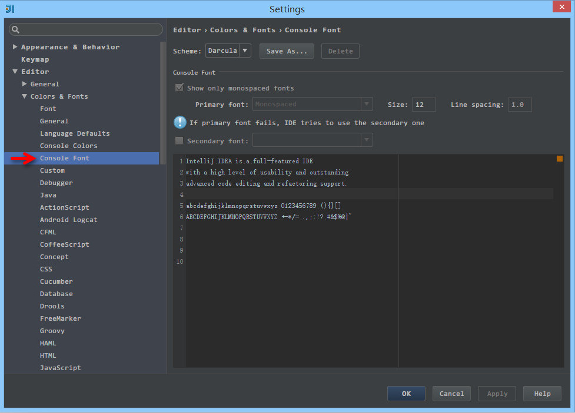
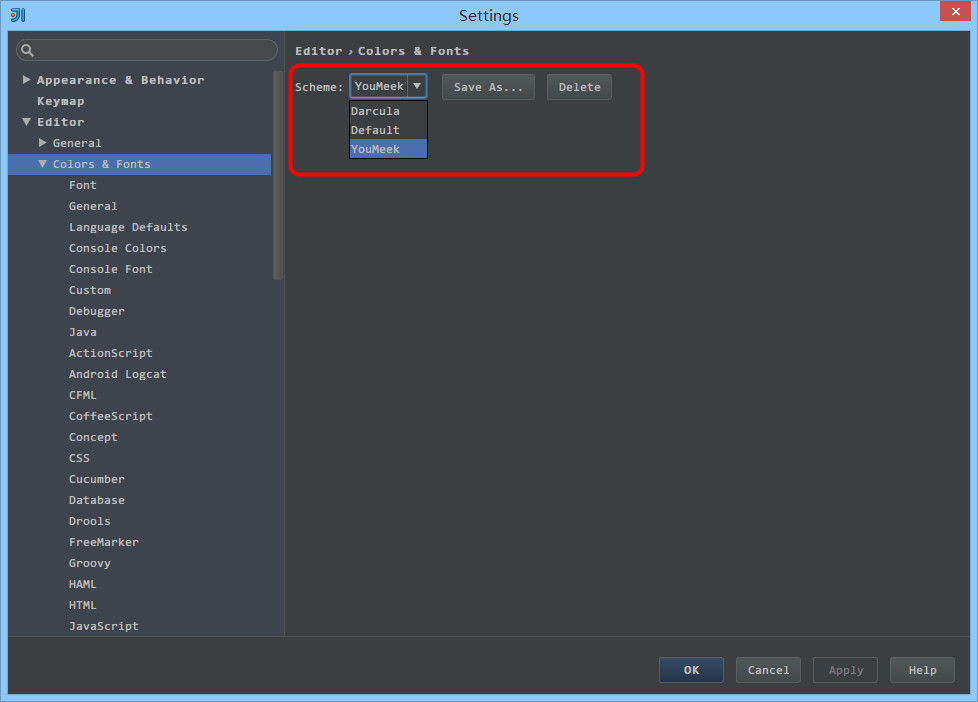
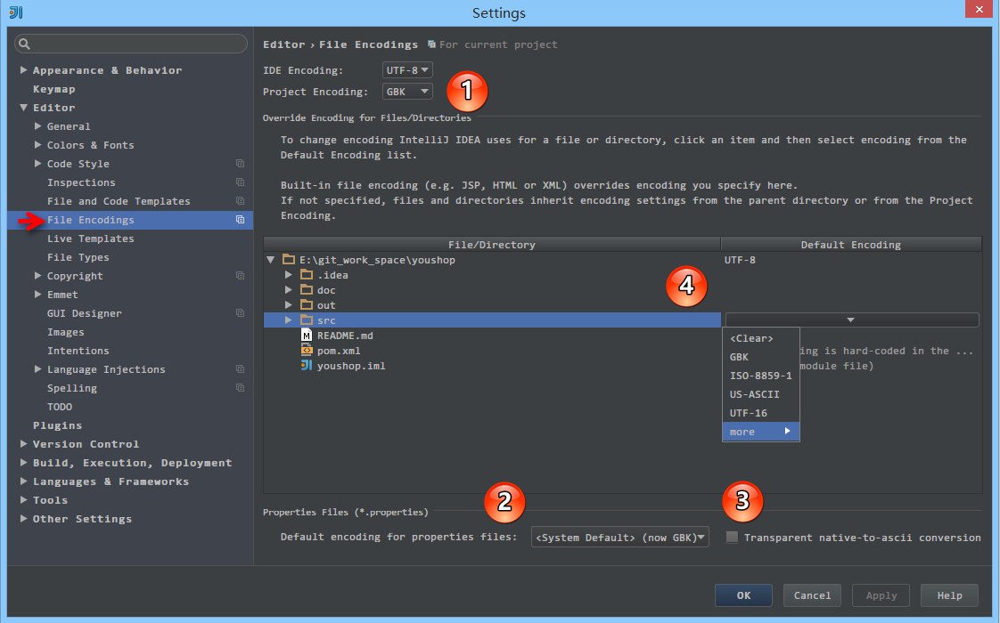
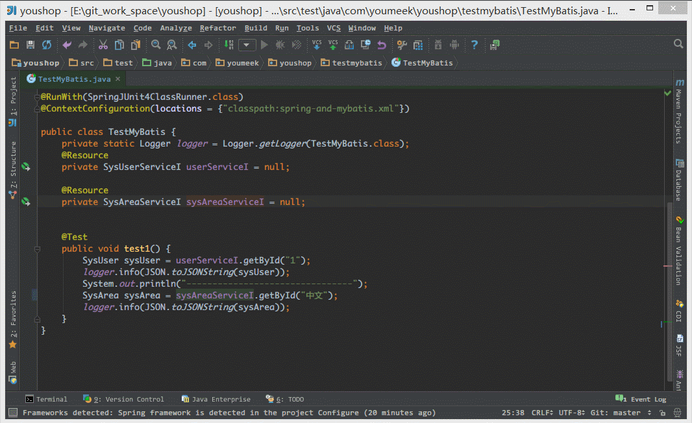

IntelliJ IDEA 主题、字体、编辑区主题、文件编码修改
主题修改

- 上图标注 1 所示为 IntelliJ IDEA 修改主题的地方，在 Windows 系统上 IntelliJ IDEA 默认提供的主题有四套：
Darcula、IntelliJ、Windows、Alloy. IDEA Theme。除了 Darcula 是黑色主题，其他三套都是以白色为背景的。
- 其他操作系统上不一定会也有四套主题的，主题的选择上大家根据自己喜好即可。改变主题需要重启 IntelliJ IDEA 方可看到效果。
字体修改
主题字体修改

- 如上图标注 1 所示，IntelliJ IDEA 主题字体的修改要先勾选
Override default fonts by 。默认 IntelliJ IDEA 是不推荐修改的，但是由于字体是有分包含中文和不包含中文之分的，一般使用英文的国家是不需要额外担心乱码问题的，而我们需要。
- 字体的审美上每个人不一样，但是如上一段说的，这里的字体修改是需要知道一个前提的，那就是你选择的那个字体必须含有中文，比如微软雅黑和宋体这类是包含中文的，而
Courier New 和 Monaco 这类只是单纯的英文字体。
- 如果你选择的字体不包含中文，那可能会在很多位置上出现类似
口口口口口 这样的乱码问题，比如文件名含有中文、字体是中文名字的都会变成 口口口口口。
- 在修改 IntelliJ IDEA 的主题字体的时候，不建议把字体调成很大，因为很多人遇到这样一种情况：显示器分辨率低，主题字体又大，在 IntelliJ IDEA 的某些操作的工具菜单、右键菜单选项中部分选项超出了分辨率显示范围，没办法被选中。当然了，如果你一定要把字体改大，又不用大分辨率显示器，那可以通过 IntelliJ IDEA 的
Menus and Toolbars 删除部分你认为用不到的菜单，但是一般不建议这样做。
- 还需要特别注意的时候，如果你是开着 IntelliJ IDEA 的时候，新装了一个字体的话，那必须重启IntelliJ IDEA 之后才能在下拉列表找到新装的字体。
代码编辑字体修改

- 如上图标注 1 所示，默认 IntelliJ IDEA 是不能直接在默认的代码模板上修改字体的，需要先
Save As 一份出来，然后才可以修改。这种设计在 IntelliJ IDEA 其他很多设置也是如此的，所以如果你还看到类似有 Copy、Save As 这类选项的按钮就要想到是此设计思想。
- 如上图标注 2 所示，勾选的
Show only monospaced fonts 表示筛选显示系统上的等宽字体。由于 Windows 系统上等宽字体并不多，勾选此选项出现的下拉字体可选择就很少。取消勾选之后，就可以显示系统上所有已安装的字体。
- 如上图标注 3 所示，其中编码字体有第一字体（
Primary font） 和 第二字体（Secondary font）之分。当有些字符在第一字体支持不了的时候，会去使用第二字体进行支持。
- 我个人习惯上：英文字体使用
Monaco，由于此字体不支持中文，所以我把这个设置为第一字体，第二字体使用 Yahei Consolas Hybrid 进行支持，该字体含有中文。这两个字体都不是系统自带的，需要自行下载安装。
- 如果你的第一字体不包含中文的话，第二字体包含中文，那在有些地方也还是会出现
口口口口口 这类问题，比如 Ctrl + Shift + N 进行查找文件的时候，如果你输入中文也会变成 口口口口口 ，我个人文件名为中文的不多，所以就容忍了这种情况。如果你不愿意容忍这种情况，那还是回到最开始的要求：第一字体包含中文。
控制台输出字体修改

- 如上图为控制台输出内容字体修改，有很多 IntelliJ IDEA 新人在做输出的时候出现乱码原因就是因为没有在这里进行设置。
-
控制台输出字体 修改的原理跟 代码编辑字体修改 是一样的，所以这里不进行讲解。
编辑区主题修改
编辑区主题介绍

- 编辑区主题，也就是代码书写区的主题修改。基本上大家在
General 上都有对此进行小修小改，我下面也主要介绍下我个人在 General 上常修改的一些地方，其他特性的颜色修改我一般默认，但是修改方法原理一样。
- 如上图红圈下拉所示，展示的是我当前电脑可以选择的编辑区主题。
- 对于编辑区的主题，也有人制作成模板在网络上提供下载。这里主要介绍两个站点：
编辑区主题细节修改

- 上图标注 1 为可修改的通用细节内容
- 上图标注 2 为可修改属性，其中并不是每个细节都可以修改所有属性的。比如细节：
Default text 是可以勾选 Bold，而 Caret row 则是无法勾选 Bold，因为只有文本才有加粗的属性需求。
- 上图标注 3 为修改后的预览区，预览区是实时动态展示的。
- 在
General 区，我常修改的有：
-
Default text，指的是默认代码文本，我一般会修改其 Background 属性。
-
Caret row，指的是光标所在行，我一般会修改其 Background 属性。
-
Vertical indent guide，指的是垂直缩进线，我一般会修改其 Foreground 属性。
-
Identifier under caret，指的是光标所在位置的相同标识符呈现什么效果，我一般会修改其 Background 属性。
-
Text search result，指的是在查找模式下，匹配字符的样式，我一般会修改其 Background 属性。
文件编码修改

- 上图标注 1 所示，IDE 的编码默认是
UTF-8，Project Encoding 虽然默认是 GBK，但是一般我都建议修改为 UTF-8。
- 上图标注 2 所示，IntelliJ IDEA 可以对
Properties 文件进行专门的编码设置，一般也建议改为 UTF-8，其中有一个重点就是属性 Transparent native-to-ascii conversion，
- 上图标注 3 所示，对于
Properties 文件，重要属性 Transparent native-to-ascii conversion 主要用于转换 ascii，一般都要勾选，不然 Properties 文件中的注释显示的都不会是中文。
- 上图标注 4 所示，IntelliJ IDEA 除了支持对整个 Project 设置编码之外，还支持对目录、文件进行编码设置。如果你要对目录进行编码设置的话，可能会出现需要
Convert 编码的弹出操作选择，强烈建议 在转换之前做好文件备份，不然可能出现转换过程变成乱码，无法还原。

- 如上图演示，对单独文件的编码修改还可以点击右下角的编码设置区。如果代码内容中包含中文，则会弹出演示中的操作选择。
-
Reload 表示使用新编码重新加载，新编码不会保存到文件中，重新打开此文件，旧编码是什么依旧还是什么。
-
Convert 表示使用新编码进行转换，新编码会保存到文件中，重新打开此文件，新编码是什么则是什么。
- 含有中文的代码文件，
Convert 之后可能会使中文变成乱码，所以在转换成请做好备份，不然可能出现转换过程变成乱码，无法还原。
由于编码问题引起的编译错误
- 编译报错：
找不到符号、未结束的字符串文字 等的解决办法：
- 由于 UTF-8 编码文件有分
有BOM 和 无BOM 之分，默认情况下 IntelliJ IDEA 使用的编译器是 javac，而此编译只能编译 无BOM 的文件，有很多 Eclipse 用户在使用 IntelliJ IDEA 开发 Eclipse 项目的时候常常会遇到此问题。主要是因为 Eclipse 的编译器是 Eclipse，此编译器支持 有BOM 的文件编译。顾，解决办法是对于此文件进行 BOM 去除。
- 批量去除 BOM，你可以 Google：
批量去除 BOM、批量转换无 BOM 等关键字，网络上已有提供各种方案。
- 除了通过去除 BOM 还有设置 IntelliJ IDEA 的编译器为
Eclipse，但是一般不建议这样做。
- 如果上述问题都无法解决，而且你也确认 IntelliJ IDEA 各个配置编码的地方都是
UTF-8，报错文件编码也是是 UTF-8 无 BOM 的话，那还有一种可能也会出现这种情况：项目配置文件有问题。项目编码的配置文件在：/项目目录/.idea/encodings.xml。如果你会修改此文件可以进行修改，如果不会，那就删除掉 .idea 整个目录，重启 IntelliJ IDEA 重新配置这个项目即可。